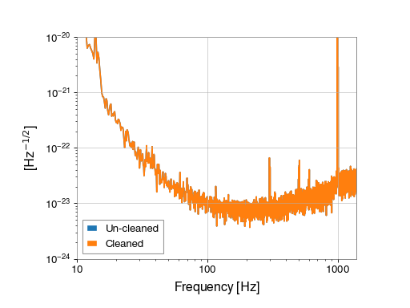

StateTimeSeries¶
-
class
gwpy.timeseries.StateTimeSeries[source]¶ Bases:
gwpy.timeseries.core.TimeSeriesBaseBoolean array representing a good/bad state determination
Parameters: value : array-like
input data array
t0 :
LIGOTimeGPS,float,str, optionalGPS epoch associated with these data, any input parsable by
to_gpsis finedt :
float,Quantity, optional, default:1time between successive samples (seconds), can also be given inversely via
sample_ratesample_rate :
float,Quantity, optional, default:1the rate of samples per second (Hertz), can also be given inversely via
dttimes :
array-likethe complete array of GPS times accompanying the data for this series. This argument takes precedence over
t0anddtso should be given in place of these if relevant, not alongsidename :
str, optionaldescriptive title for this array
channel :
Channel,str, optionalsource data stream for these data
dtype :
dtype, optionalinput data type
copy :
bool, optional, default:Falsechoose to copy the input data to new memory
subok :
bool, optional, default:Trueallow passing of sub-classes by the array generator
Notes
Key methods
to_dqflag([name, minlen, dtype, round, …])Convert this series into a DataQualityFlagMethods Summary
abs(x, /[, out, where, casting, order, …])Calculate the absolute value element-wise. all([axis, out, keepdims])Returns True if all elements evaluate to True. any([axis, out, keepdims])Returns True if any of the elements of aevaluate to True.append(other[, gap, inplace, pad, resize])Connect another series onto the end of the current one. argmax([axis, out])Return indices of the maximum values along the given axis. argmin([axis, out])Return indices of the minimum values along the given axis of a.argpartition(kth[, axis, kind, order])Returns the indices that would partition this array. argsort([axis, kind, order])Returns the indices that would sort this array. astype(dtype[, order, casting, subok, copy])Copy of the array, cast to a specified type. byteswap(inplace)Swap the bytes of the array elements choose(choices[, out, mode])Use an index array to construct a new array from a set of choices. clip([min, max, out])Return an array whose values are limited to [min, max].compress(condition[, axis, out])Return selected slices of this array along given axis. conj()Complex-conjugate all elements. conjugate()Return the complex conjugate, element-wise. copy([order])Return a copy of the array. crop([start, end, copy])Crop this series to the given x-axis extent. cumprod([axis, dtype, out])Return the cumulative product of the elements along the given axis. cumsum([axis, dtype, out])Return the cumulative sum of the elements along the given axis. decompose([bases])Generates a new Quantitywith the units decomposed.diagonal([offset, axis1, axis2])Return specified diagonals. diff([n, axis])Calculate the n-th order discrete difference along given axis. dot(b[, out])Dot product of two arrays. dump(file)Dump a pickle of the array to the specified file. dumps()Returns the pickle of the array as a string. ediff1d([to_end, to_begin])fetch(channel, start, end[, host, port, …])Fetch data from NDS fetch_open_data(ifo, start, end[, …])Fetch open-access data from the LIGO Open Science Center fill(value)Fill the array with a scalar value. find(channel, start, end[, frametype, pad, …])Find and read data from frames for a channel flatten([order])Return a copy of the array collapsed into one dimension. from_lal(lalts[, copy])Generate a new TimeSeries from a LAL TimeSeries of any type. from_nds2_buffer(buffer_, **metadata)Construct a new TimeSeriesfrom annds2.bufferobjectfrom_pycbc(pycbcseries[, copy])Convert a pycbc.types.timeseries.TimeSeriesinto aTimeSeriesget(channel, start, end[, pad, dtype, …])Get data for this channel from frames or NDS getfield(dtype[, offset])Returns a field of the given array as a certain type. insert(obj, values[, axis])Insert values along the given axis before the given indices and return a new Quantityobject.is_compatible(other)Check whether this series and other have compatible metadata is_contiguous(other[, tol])Check whether other is contiguous with self. item(*args)Copy an element of an array to a standard Python scalar and return it. itemset(*args)Insert scalar into an array (scalar is cast to array’s dtype, if possible) max([axis, out])Return the maximum along a given axis. mean([axis, dtype, out, keepdims])Returns the average of the array elements along given axis. median([axis])Compute the median along the specified axis. min([axis, out, keepdims])Return the minimum along a given axis. nansum([axis, out, keepdims])newbyteorder([new_order])Return the array with the same data viewed with a different byte order. nonzero()Return the indices of the elements that are non-zero. override_unit(unit[, parse_strict])Forcefully reset the unit of these data pad(pad_width, **kwargs)Pad this series to a new size partition(kth[, axis, kind, order])Rearranges the elements in the array in such a way that value of the element in kth position is in the position it would be in a sorted array. plot(**kwargs)Plot the data for this timeseries prepend(other[, gap, inplace, pad, resize])Connect another series onto the start of the current one. prod([axis, dtype, out, keepdims])Return the product of the array elements over the given axis ptp([axis, out])Peak to peak (maximum - minimum) value along a given axis. put(indices, values[, mode])Set a.flat[n] = values[n]for allnin indices.ravel([order])Return a flattened array. read(source, *args, **kwargs)Read data into a TimeSeriesrepeat(repeats[, axis])Repeat elements of an array. reshape(shape[, order])Returns an array containing the same data with a new shape. resize(new_shape[, refcheck])Change shape and size of array in-place. round([decimals, out])Return awith each element rounded to the given number of decimals.searchsorted(v[, side, sorter])Find indices where elements of v should be inserted in a to maintain order. setfield(val, dtype[, offset])Put a value into a specified place in a field defined by a data-type. setflags([write, align, uic])Set array flags WRITEABLE, ALIGNED, and UPDATEIFCOPY, respectively. shift(delta)Shift this TimeSeriesforward in time bydeltasort([axis, kind, order])Sort an array, in-place. squeeze([axis])Remove single-dimensional entries from the shape of a.std([axis, dtype, out, ddof, keepdims])Returns the standard deviation of the array elements along given axis. sum([axis, dtype, out, keepdims])Return the sum of the array elements over the given axis. swapaxes(axis1, axis2)Return a view of the array with axis1andaxis2interchanged.take(indices[, axis, out, mode])Return an array formed from the elements of aat the given indices.to(unit[, equivalencies])Return a new Quantityobject with the specified unit.to_dqflag([name, minlen, dtype, round, …])Convert this series into a DataQualityFlagto_lal(*args, **kwargs)Bogus function inherited from superclass, do not use. to_pycbc([copy])Convert this TimeSeriesinto a PyCBCto_value([unit, equivalencies])The numerical value, possibly in a different unit. tobytes([order])Construct Python bytes containing the raw data bytes in the array. tofile(fid[, sep, format])Write array to a file as text or binary (default). tolist()Return the array as a (possibly nested) list. tostring([order])Construct Python bytes containing the raw data bytes in the array. trace([offset, axis1, axis2, dtype, out])Return the sum along diagonals of the array. transpose(*axes)Returns a view of the array with axes transposed. update(other[, inplace])Update this series by appending new data from an other and dropping the same amount of data off the start. value_at(x)Return the value of this Seriesat the givenxindexvaluevar([axis, dtype, out, ddof, keepdims])Returns the variance of the array elements, along given axis. view([dtype, type])New view of array with the same data. write(target, *args, **kwargs)Write this TimeSeriesto a filezip()Zip the xindexandvaluearrays of thisSeriesMethods Documentation
-
abs(x, /, out=None, *, where=True, casting='same_kind', order='K', dtype=None, subok=True[, signature, extobj])[source]¶ Calculate the absolute value element-wise.
Parameters: x : array_like
Input array.
out : ndarray, None, or tuple of ndarray and None, optional
A location into which the result is stored. If provided, it must have a shape that the inputs broadcast to. If not provided or
None, a freshly-allocated array is returned. A tuple (possible only as a keyword argument) must have length equal to the number of outputs.where : array_like, optional
Values of True indicate to calculate the ufunc at that position, values of False indicate to leave the value in the output alone.
**kwargs
For other keyword-only arguments, see the ufunc docs.
Returns: absolute : ndarray
An ndarray containing the absolute value of each element in
.x. For complex input,a + ib, the absolute value isExamples
>>> x = np.array([-1.2, 1.2]) >>> np.absolute(x) array([ 1.2, 1.2]) >>> np.absolute(1.2 + 1j) 1.5620499351813308
Plot the function over
[-10, 10]:>>> import matplotlib.pyplot as plt
>>> x = np.linspace(start=-10, stop=10, num=101) >>> plt.plot(x, np.absolute(x)) >>> plt.show()
(png)

Plot the function over the complex plane:
>>> xx = x + 1j * x[:, np.newaxis] >>> plt.imshow(np.abs(xx), extent=[-10, 10, -10, 10], cmap='gray') >>> plt.show()
(png)

-
all(axis=None, out=None, keepdims=False)¶ Returns True if all elements evaluate to True.
Refer to
numpy.allfor full documentation.See also
numpy.all- equivalent function
-
any(axis=None, out=None, keepdims=False)¶ Returns True if any of the elements of
aevaluate to True.Refer to
numpy.anyfor full documentation.See also
numpy.any- equivalent function
-
append(other, gap='raise', inplace=True, pad=0, resize=True)[source]¶ Connect another series onto the end of the current one.
Parameters: other :
Seriesanother series of the same type to connect to this one
gap :
str, optional, default:'raise'action to perform if there’s a gap between the other series and this one. One of
'raise'- raise anException'ignore'- remove gap and join data
'pad'- pad gap with zeros
inplace :
bool, optional, default:Trueperform operation in-place, modifying current
Series, otherwise copy data and return newSeriesWarning
inplace append bypasses the reference check in
numpy.ndarray.resize, so be carefully to only use this for arrays that haven’t been sharing their memory!pad :
float, optional, default:0.0value with which to pad discontiguous series
resize :
bool, optional, default:Trueresize this array to accommodate new data, otherwise shift the old data to the left (potentially falling off the start) and put the new data in at the end
Returns: series :
Seriesa new series containing joined data sets
-
argmax(axis=None, out=None)¶ Return indices of the maximum values along the given axis.
Refer to
numpy.argmaxfor full documentation.See also
numpy.argmax- equivalent function
-
argmin(axis=None, out=None)¶ Return indices of the minimum values along the given axis of
a.Refer to
numpy.argminfor detailed documentation.See also
numpy.argmin- equivalent function
-
argpartition(kth, axis=-1, kind='introselect', order=None)¶ Returns the indices that would partition this array.
Refer to
numpy.argpartitionfor full documentation.New in version 1.8.0.
See also
numpy.argpartition- equivalent function
-
argsort(axis=-1, kind='quicksort', order=None)¶ Returns the indices that would sort this array.
Refer to
numpy.argsortfor full documentation.See also
numpy.argsort- equivalent function
-
astype(dtype, order='K', casting='unsafe', subok=True, copy=True)¶ Copy of the array, cast to a specified type.
Parameters: dtype : str or dtype
Typecode or data-type to which the array is cast.
order : {‘C’, ‘F’, ‘A’, ‘K’}, optional
Controls the memory layout order of the result. ‘C’ means C order, ‘F’ means Fortran order, ‘A’ means ‘F’ order if all the arrays are Fortran contiguous, ‘C’ order otherwise, and ‘K’ means as close to the order the array elements appear in memory as possible. Default is ‘K’.
casting : {‘no’, ‘equiv’, ‘safe’, ‘same_kind’, ‘unsafe’}, optional
Controls what kind of data casting may occur. Defaults to ‘unsafe’ for backwards compatibility.
- ‘no’ means the data types should not be cast at all.
- ‘equiv’ means only byte-order changes are allowed.
- ‘safe’ means only casts which can preserve values are allowed.
- ‘same_kind’ means only safe casts or casts within a kind, like float64 to float32, are allowed.
- ‘unsafe’ means any data conversions may be done.
subok : bool, optional
If True, then sub-classes will be passed-through (default), otherwise the returned array will be forced to be a base-class array.
copy : bool, optional
By default, astype always returns a newly allocated array. If this is set to false, and the
dtype,order, andsubokrequirements are satisfied, the input array is returned instead of a copy.Returns: arr_t : ndarray
Raises: ComplexWarning
When casting from complex to float or int. To avoid this, one should use
a.real.astype(t).Notes
Starting in NumPy 1.9, astype method now returns an error if the string dtype to cast to is not long enough in ‘safe’ casting mode to hold the max value of integer/float array that is being casted. Previously the casting was allowed even if the result was truncated.
Examples
>>> x = np.array([1, 2, 2.5]) >>> x array([ 1. , 2. , 2.5])
>>> x.astype(int) array([1, 2, 2])
-
byteswap(inplace)¶ Swap the bytes of the array elements
Toggle between low-endian and big-endian data representation by returning a byteswapped array, optionally swapped in-place.
Parameters: inplace : bool, optional
If
True, swap bytes in-place, default isFalse.Returns: out : ndarray
The byteswapped array. If
inplaceisTrue, this is a view to self.Examples
>>> A = np.array([1, 256, 8755], dtype=np.int16) >>> map(hex, A) ['0x1', '0x100', '0x2233'] >>> A.byteswap(True) array([ 256, 1, 13090], dtype=int16) >>> map(hex, A) ['0x100', '0x1', '0x3322']
Arrays of strings are not swapped
>>> A = np.array(['ceg', 'fac']) >>> A.byteswap() array(['ceg', 'fac'], dtype='|S3')
-
choose(choices, out=None, mode='raise')¶ Use an index array to construct a new array from a set of choices.
Refer to
numpy.choosefor full documentation.See also
numpy.choose- equivalent function
-
clip(min=None, max=None, out=None)¶ Return an array whose values are limited to
[min, max]. One of max or min must be given.Refer to
numpy.clipfor full documentation.See also
numpy.clip- equivalent function
-
compress(condition, axis=None, out=None)¶ Return selected slices of this array along given axis.
Refer to
numpy.compressfor full documentation.See also
numpy.compress- equivalent function
-
conj()¶ Complex-conjugate all elements.
Refer to
numpy.conjugatefor full documentation.See also
numpy.conjugate- equivalent function
-
conjugate()¶ Return the complex conjugate, element-wise.
Refer to
numpy.conjugatefor full documentation.See also
numpy.conjugate- equivalent function
-
copy(order='C')[source]¶ Return a copy of the array.
Parameters: order : {‘C’, ‘F’, ‘A’, ‘K’}, optional
Controls the memory layout of the copy. ‘C’ means C-order, ‘F’ means F-order, ‘A’ means ‘F’ if
ais Fortran contiguous, ‘C’ otherwise. ‘K’ means match the layout ofaas closely as possible. (Note that this function and :func:numpy.copy are very similar, but have different default values for their order= arguments.)See also
Examples
>>> x = np.array([[1,2,3],[4,5,6]], order='F')
>>> y = x.copy()
>>> x.fill(0)
>>> x array([[0, 0, 0], [0, 0, 0]])
>>> y array([[1, 2, 3], [4, 5, 6]])
>>> y.flags['C_CONTIGUOUS'] True
-
crop(start=None, end=None, copy=False)[source]¶ Crop this series to the given x-axis extent.
Parameters: start :
float, optionallower limit of x-axis to crop to, defaults to current
x0end :
float, optionalupper limit of x-axis to crop to, defaults to current series end
copy :
bool, optional, default:Falsecopy the input data to fresh memory, otherwise return a view
Returns: series :
SeriesA new series with a sub-set of the input data
Notes
If either
startorendare outside of the originalSeriesspan, warnings will be printed and the limits will be restricted to thexspan
-
cumprod(axis=None, dtype=None, out=None)¶ Return the cumulative product of the elements along the given axis.
Refer to
numpy.cumprodfor full documentation.See also
numpy.cumprod- equivalent function
-
cumsum(axis=None, dtype=None, out=None)¶ Return the cumulative sum of the elements along the given axis.
Refer to
numpy.cumsumfor full documentation.See also
numpy.cumsum- equivalent function
-
decompose(bases=[])¶ Generates a new
Quantitywith the units decomposed. Decomposed units have only irreducible units in them (seeastropy.units.UnitBase.decompose).Parameters: bases : sequence of UnitBase, optional
The bases to decompose into. When not provided, decomposes down to any irreducible units. When provided, the decomposed result will only contain the given units. This will raises a
UnitsErrorif it’s not possible to do so.Returns: newq :
QuantityA new object equal to this quantity with units decomposed.
-
diagonal(offset=0, axis1=0, axis2=1)¶ Return specified diagonals. In NumPy 1.9 the returned array is a read-only view instead of a copy as in previous NumPy versions. In a future version the read-only restriction will be removed.
Refer to
numpy.diagonal()for full documentation.See also
numpy.diagonal- equivalent function
-
diff(n=1, axis=-1)[source]¶ Calculate the n-th order discrete difference along given axis.
The first order difference is given by
out[n] = a[n+1] - a[n]along the given axis, higher order differences are calculated by usingdiffrecursively.Parameters: n : int, optional
The number of times values are differenced.
axis : int, optional
The axis along which the difference is taken, default is the last axis.
Returns: diff :
SeriesThe
norder differences. The shape of the output is the same as the input, except alongaxiswhere the dimension is smaller byn.See also
numpy.diff- for documentation on the underlying method
-
dot(b, out=None)¶ Dot product of two arrays.
Refer to
numpy.dotfor full documentation.See also
numpy.dot- equivalent function
Examples
>>> a = np.eye(2) >>> b = np.ones((2, 2)) * 2 >>> a.dot(b) array([[ 2., 2.], [ 2., 2.]])
This array method can be conveniently chained:
>>> a.dot(b).dot(b) array([[ 8., 8.], [ 8., 8.]])
-
dump(file)¶ Dump a pickle of the array to the specified file. The array can be read back with pickle.load or numpy.load.
Parameters: file : str
A string naming the dump file.
-
dumps()[source]¶ Returns the pickle of the array as a string. pickle.loads or numpy.loads will convert the string back to an array.
Parameters: - None
-
ediff1d(to_end=None, to_begin=None)¶
-
fetch(channel, start, end, host=None, port=None, verbose=False, connection=None, verify=False, pad=None, allow_tape=None, type=None, dtype=None)[source]¶ Fetch data from NDS
Parameters: the data channel for which to query
start :
LIGOTimeGPS,float,strGPS start time of required data, any input parseable by
to_gpsis fineGPS end time of required data, any input parseable by
to_gpsis finehost :
str, optionalURL of NDS server to use, if blank will try any server (in a relatively sensible order) to get the data
port :
int, optionalport number for NDS server query, must be given with
hostverify :
bool, optional, default:Falsecheck channels exist in database before asking for data
connection :
nds2.connection, optionalopen NDS connection to use
verbose :
bool, optionalprint verbose output about NDS progress, useful for debugging
type :
int, optionalNDS2 channel type integer
dtype :
type,numpy.dtype,str, optionalidentifier for desired output data type
-
fetch_open_data(ifo, start, end, sample_rate=4096, tag=None, version=None, format=None, host='https://losc.ligo.org', verbose=False, cache=None, **kwargs)[source]¶ Fetch open-access data from the LIGO Open Science Center
Parameters: ifo :
strthe two-character prefix of the IFO in which you are interested, e.g.
'L1'start :
LIGOTimeGPS,float,str, optionalGPS start time of required data, defaults to start of data found; any input parseable by
to_gpsis fineend :
LIGOTimeGPS,float,str, optionalGPS end time of required data, defaults to end of data found; any input parseable by
to_gpsis finesample_rate :
float, optional,the sample rate of desired data; most data are stored by LOSC at 4096 Hz, however there may be event-related data releases with a 16384 Hz rate, default:
4096tag :
str, optionalfile tag, e.g.
'CLN'to select cleaned data, or'C00'for ‘raw’ calibrated data.version :
int, optionalversion of files to download, defaults to highest discovered version
format :
str, optionalthe data format to download and parse, defaults to the most efficient option based on third-party libraries available; one of:
'txt.gz'- requiresnumpy'hdf5'- requiresh5py'gwf'- requiresLDAStools.frameCPP
host :
str, optionalHTTP host name of LOSC server to access
verbose :
bool, optional, default:Falseprint verbose output while fetching data
cache :
bool, optionalsave/read a local copy of the remote URL, default:
False; useful if the same remote data are to be accessed multiple times. SetGWPY_CACHE=1in the environment to auto-cache.**kwargs
any other keyword arguments are passed to the
TimeSeries.readmethod that parses the file that was downloadedNotes
StateVectordata are not available intxt.gzformat.Examples
>>> from gwpy.timeseries import (TimeSeries, StateVector) >>> print(TimeSeries.fetch_open_data('H1', 1126259446, 1126259478)) TimeSeries([ 2.17704028e-19, 2.08763900e-19, 2.39681183e-19, ..., 3.55365541e-20, 6.33533516e-20, 7.58121195e-20] unit: Unit(dimensionless), t0: 1126259446.0 s, dt: 0.000244140625 s, name: Strain, channel: None) >>> print(StateVector.fetch_open_data('H1', 1126259446, 1126259478)) StateVector([127,127,127,127,127,127,127,127,127,127,127,127, 127,127,127,127,127,127,127,127,127,127,127,127, 127,127,127,127,127,127,127,127] unit: Unit(dimensionless), t0: 1126259446.0 s, dt: 1.0 s, name: Data quality, channel: None, bits: Bits(0: data present 1: passes cbc CAT1 test 2: passes cbc CAT2 test 3: passes cbc CAT3 test 4: passes burst CAT1 test 5: passes burst CAT2 test 6: passes burst CAT3 test, channel=None, epoch=1126259446.0))
For the
StateVector, the naming of the bits will beformat-dependent, because they are recorded differently by LOSC in different formats.For events published in O2 and later, LOSC typically provides multiple data sets containing the original (
'C00') and cleaned ('CLN') data. To select both data sets and plot a comparison, for example:>>> orig = TimeSeries.fetch_open_data('H1', 1187008870, 1187008896, ... tag='C00') >>> cln = TimeSeries.fetch_open_data('H1', 1187008870, 1187008896, ... tag='CLN') >>> origasd = orig.asd(fftlength=4, overlap=2) >>> clnasd = cln.asd(fftlength=4, overlap=2) >>> plot = origasd.plot(label='Un-cleaned') >>> ax = plot.gca() >>> ax.plot(clnasd, label='Cleaned') >>> ax.set_xlim(10, 1400) >>> ax.set_ylim(1e-24, 1e-20) >>> ax.legend() >>> plot.show()
(png)

-
fill(value)¶ Fill the array with a scalar value.
Parameters: value : scalar
All elements of
awill be assigned this value.Examples
>>> a = np.array([1, 2]) >>> a.fill(0) >>> a array([0, 0]) >>> a = np.empty(2) >>> a.fill(1) >>> a array([ 1., 1.])
-
find(channel, start, end, frametype=None, pad=None, dtype=None, nproc=1, verbose=False, **readargs)[source]¶ Find and read data from frames for a channel
Parameters: the name of the channel to read, or a
Channelobject.start :
LIGOTimeGPS,float,strGPS start time of required data, any input parseable by
to_gpsis fineGPS end time of required data, any input parseable by
to_gpsis fineframetype :
str, optionalname of frametype in which this channel is stored, will search for containing frame types if necessary
pad :
float, optionalvalue with which to fill gaps in the source data, only used if gap is not given, or
gap='pad'is givennproc :
int, optional, default:1number of parallel processes to use, serial process by default.
dtype :
numpy.dtype,str,type, ordictnumeric data type for returned data, e.g.
numpy.float, ordictof (channel,dtype) pairsallow_tape :
bool, optional, default:Trueallow reading from frame files on (slow) magnetic tape
verbose :
bool, optionalprint verbose output about NDS progress.
**readargs
any other keyword arguments to be passed to
read()
-
flatten(order='C')¶ Return a copy of the array collapsed into one dimension.
Parameters: order : {‘C’, ‘F’, ‘A’, ‘K’}, optional
‘C’ means to flatten in row-major (C-style) order. ‘F’ means to flatten in column-major (Fortran- style) order. ‘A’ means to flatten in column-major order if
ais Fortran contiguous in memory, row-major order otherwise. ‘K’ means to flattenain the order the elements occur in memory. The default is ‘C’.Returns: y : ndarray
A copy of the input array, flattened to one dimension.
See also
ravel- Return a flattened array.
flat- A 1-D flat iterator over the array.
Examples
>>> a = np.array([[1,2], [3,4]]) >>> a.flatten() array([1, 2, 3, 4]) >>> a.flatten('F') array([1, 3, 2, 4])
-
from_nds2_buffer(buffer_, **metadata)[source]¶ Construct a new
TimeSeriesfrom annds2.bufferobjectParameters: buffer_ :
nds2.bufferthe input NDS2-client buffer to read
**metadata
any other metadata keyword arguments to pass to the
TimeSeriesconstructorReturns: timeseries :
TimeSeriesa new
TimeSeriescontaining the data from thends2.buffer, and the appropriate metadataNotes
This classmethod requires the nds2-client package
-
from_pycbc(pycbcseries, copy=True)[source]¶ Convert a
pycbc.types.timeseries.TimeSeriesinto aTimeSeriesParameters: pycbcseries :
pycbc.types.timeseries.TimeSeriesthe input PyCBC
TimeSeriesarraycopy :
bool, optional, default:Trueif
True, copy these data to a new arrayReturns: timeseries :
TimeSeriesa GWpy version of the input timeseries
-
get(channel, start, end, pad=None, dtype=None, verbose=False, allow_tape=None, **kwargs)[source]¶ Get data for this channel from frames or NDS
This method dynamically accesses either frames on disk, or a remote NDS2 server to find and return data for the given interval
Parameters: the name of the channel to read, or a
Channelobject.start :
LIGOTimeGPS,float,strGPS start time of required data, any input parseable by
to_gpsis fineGPS end time of required data, any input parseable by
to_gpsis finepad :
float, optionalvalue with which to fill gaps in the source data, default to ‘don’t fill gaps’
dtype :
numpy.dtype,str,type, ordictnumeric data type for returned data, e.g.
numpy.float, ordictof (channel,dtype) pairsnproc :
int, optional, default:1number of parallel processes to use, serial process by default.
allow_tape :
bool, optional, default:Noneallow the use of frames that are held on tape, default is
Noneto attempt to allow theTimeSeries.fetchmethod to intelligently select a server that doesn’t use tapes for data storage (doesn’t always work), but to eventually allow retrieving data from tape if requiredverbose :
bool, optionalprint verbose output about NDS progress.
**kwargs
See also
TimeSeries.fetch- for grabbing data from a remote NDS2 server
TimeSeries.find- for discovering and reading data from local GWF files
-
getfield(dtype, offset=0)¶ Returns a field of the given array as a certain type.
A field is a view of the array data with a given data-type. The values in the view are determined by the given type and the offset into the current array in bytes. The offset needs to be such that the view dtype fits in the array dtype; for example an array of dtype complex128 has 16-byte elements. If taking a view with a 32-bit integer (4 bytes), the offset needs to be between 0 and 12 bytes.
Parameters: dtype : str or dtype
The data type of the view. The dtype size of the view can not be larger than that of the array itself.
offset : int
Number of bytes to skip before beginning the element view.
Examples
>>> x = np.diag([1.+1.j]*2) >>> x[1, 1] = 2 + 4.j >>> x array([[ 1.+1.j, 0.+0.j], [ 0.+0.j, 2.+4.j]]) >>> x.getfield(np.float64) array([[ 1., 0.], [ 0., 2.]])
By choosing an offset of 8 bytes we can select the complex part of the array for our view:
>>> x.getfield(np.float64, offset=8) array([[ 1., 0.], [ 0., 4.]])
-
insert(obj, values, axis=None)¶ Insert values along the given axis before the given indices and return a new
Quantityobject.This is a thin wrapper around the
numpy.insertfunction.Parameters: obj : int, slice or sequence of ints
Object that defines the index or indices before which
valuesis inserted.values : array-like
Values to insert. If the type of
valuesis different from that of quantity,valuesis converted to the matching type.valuesshould be shaped so that it can be broadcast appropriately The unit ofvaluesmust be consistent with this quantity.axis : int, optional
Axis along which to insert
values. Ifaxisis None then the quantity array is flattened before insertion.Returns: out :
QuantityA copy of quantity with
valuesinserted. Note that the insertion does not occur in-place: a new quantity array is returned.Examples
>>> import astropy.units as u >>> q = [1, 2] * u.m >>> q.insert(0, 50 * u.cm) <Quantity [ 0.5, 1., 2.] m>
>>> q = [[1, 2], [3, 4]] * u.m >>> q.insert(1, [10, 20] * u.m, axis=0) <Quantity [[ 1., 2.], [ 10., 20.], [ 3., 4.]] m>
>>> q.insert(1, 10 * u.m, axis=1) <Quantity [[ 1., 10., 2.], [ 3., 10., 4.]] m>
-
is_compatible(other)[source]¶ Check whether this series and other have compatible metadata
This method tests that the
sample size, and theunitmatch.
-
is_contiguous(other, tol=3.814697265625e-06)[source]¶ Check whether other is contiguous with self.
Parameters: other :
Series,numpy.ndarrayanother series of the same type to test for contiguity
tol :
float, optionalthe numerical tolerance of the test
Returns: 1
if
otheris contiguous with this series, i.e. would attach seamlessly onto the end-1
if
otheris anti-contiguous with this seires, i.e. would attach seamlessly onto the start0
if
otheris completely dis-contiguous with thie seriesNotes
if a raw
numpy.ndarrayis passed as other, with no metadata, then the contiguity check will always pass
-
item(*args)¶ Copy an element of an array to a standard Python scalar and return it.
Parameters: *args : Arguments (variable number and type)
- none: in this case, the method only works for arrays
with one element (
a.size == 1), which element is copied into a standard Python scalar object and returned. - int_type: this argument is interpreted as a flat index into the array, specifying which element to copy and return.
- tuple of int_types: functions as does a single int_type argument, except that the argument is interpreted as an nd-index into the array.
Returns: z : Standard Python scalar object
A copy of the specified element of the array as a suitable Python scalar
Notes
When the data type of
ais longdouble or clongdouble, item() returns a scalar array object because there is no available Python scalar that would not lose information. Void arrays return a buffer object for item(), unless fields are defined, in which case a tuple is returned.itemis very similar to a[args], except, instead of an array scalar, a standard Python scalar is returned. This can be useful for speeding up access to elements of the array and doing arithmetic on elements of the array using Python’s optimized math.Examples
>>> x = np.random.randint(9, size=(3, 3)) >>> x array([[3, 1, 7], [2, 8, 3], [8, 5, 3]]) >>> x.item(3) 2 >>> x.item(7) 5 >>> x.item((0, 1)) 1 >>> x.item((2, 2)) 3
- none: in this case, the method only works for arrays
with one element (
-
itemset(*args)¶ Insert scalar into an array (scalar is cast to array’s dtype, if possible)
There must be at least 1 argument, and define the last argument as item. Then,
a.itemset(*args)is equivalent to but faster thana[args] = item. The item should be a scalar value andargsmust select a single item in the arraya.Parameters: *args : Arguments
If one argument: a scalar, only used in case
ais of size 1. If two arguments: the last argument is the value to be set and must be a scalar, the first argument specifies a single array element location. It is either an int or a tuple.Notes
Compared to indexing syntax,
itemsetprovides some speed increase for placing a scalar into a particular location in anndarray, if you must do this. However, generally this is discouraged: among other problems, it complicates the appearance of the code. Also, when usingitemset(anditem) inside a loop, be sure to assign the methods to a local variable to avoid the attribute look-up at each loop iteration.Examples
>>> x = np.random.randint(9, size=(3, 3)) >>> x array([[3, 1, 7], [2, 8, 3], [8, 5, 3]]) >>> x.itemset(4, 0) >>> x.itemset((2, 2), 9) >>> x array([[3, 1, 7], [2, 0, 3], [8, 5, 9]])
-
max(axis=None, out=None)¶ Return the maximum along a given axis.
Refer to
numpy.amaxfor full documentation.See also
numpy.amax- equivalent function
-
mean(axis=None, dtype=None, out=None, keepdims=False)¶ Returns the average of the array elements along given axis.
Refer to
numpy.meanfor full documentation.See also
numpy.mean- equivalent function
-
median(axis=None, **kwargs)[source]¶ Compute the median along the specified axis.
Returns the median of the array elements.
Parameters: a : array_like
Input array or object that can be converted to an array.
axis : {int, sequence of int, None}, optional
Axis or axes along which the medians are computed. The default is to compute the median along a flattened version of the array. A sequence of axes is supported since version 1.9.0.
out : ndarray, optional
Alternative output array in which to place the result. It must have the same shape and buffer length as the expected output, but the type (of the output) will be cast if necessary.
overwrite_input : bool, optional
If True, then allow use of memory of input array
afor calculations. The input array will be modified by the call tomedian. This will save memory when you do not need to preserve the contents of the input array. Treat the input as undefined, but it will probably be fully or partially sorted. Default is False. Ifoverwrite_inputisTrueandais not already anndarray, an error will be raised.keepdims : bool, optional
If this is set to True, the axes which are reduced are left in the result as dimensions with size one. With this option, the result will broadcast correctly against the original
arr.New in version 1.9.0.
Returns: median : ndarray
A new array holding the result. If the input contains integers or floats smaller than
float64, then the output data-type isnp.float64. Otherwise, the data-type of the output is the same as that of the input. Ifoutis specified, that array is returned instead.See also
mean,percentileNotes
Given a vector
Vof lengthN, the median ofVis the middle value of a sorted copy ofV,V_sorted- i e.,V_sorted[(N-1)/2], whenNis odd, and the average of the two middle values ofV_sortedwhenNis even.Examples
>>> a = np.array([[10, 7, 4], [3, 2, 1]]) >>> a array([[10, 7, 4], [ 3, 2, 1]]) >>> np.median(a) 3.5 >>> np.median(a, axis=0) array([ 6.5, 4.5, 2.5]) >>> np.median(a, axis=1) array([ 7., 2.]) >>> m = np.median(a, axis=0) >>> out = np.zeros_like(m) >>> np.median(a, axis=0, out=m) array([ 6.5, 4.5, 2.5]) >>> m array([ 6.5, 4.5, 2.5]) >>> b = a.copy() >>> np.median(b, axis=1, overwrite_input=True) array([ 7., 2.]) >>> assert not np.all(a==b) >>> b = a.copy() >>> np.median(b, axis=None, overwrite_input=True) 3.5 >>> assert not np.all(a==b)
-
min(axis=None, out=None, keepdims=False)¶ Return the minimum along a given axis.
Refer to
numpy.aminfor full documentation.See also
numpy.amin- equivalent function
-
nansum(axis=None, out=None, keepdims=False)¶
-
newbyteorder(new_order='S')¶ Return the array with the same data viewed with a different byte order.
Equivalent to:
arr.view(arr.dtype.newbytorder(new_order))
Changes are also made in all fields and sub-arrays of the array data type.
Parameters: new_order : string, optional
Byte order to force; a value from the byte order specifications below.
new_ordercodes can be any of:- ‘S’ - swap dtype from current to opposite endian
- {‘<’, ‘L’} - little endian
- {‘>’, ‘B’} - big endian
- {‘=’, ‘N’} - native order
- {‘|’, ‘I’} - ignore (no change to byte order)
The default value (‘S’) results in swapping the current byte order. The code does a case-insensitive check on the first letter of
new_orderfor the alternatives above. For example, any of ‘B’ or ‘b’ or ‘biggish’ are valid to specify big-endian.Returns: new_arr : array
New array object with the dtype reflecting given change to the byte order.
-
nonzero()¶ Return the indices of the elements that are non-zero.
Refer to
numpy.nonzerofor full documentation.See also
numpy.nonzero- equivalent function
-
override_unit(unit, parse_strict='raise')[source]¶ Forcefully reset the unit of these data
Use of this method is discouraged in favour of
to(), which performs accurate conversions from one unit to another. The method should really only be used when the original unit of the array is plain wrong.Parameters: the unit to force onto this array
parse_strict :
str, optionalhow to handle errors in the unit parsing, default is to raise the underlying exception from
astropy.unitsRaises: ValueError
if a
strcannot be parsed as a valid unit
-
pad(pad_width, **kwargs)[source]¶ Pad this series to a new size
Parameters: pad_width :
int, pair ofintsnumber of samples by which to pad each end of the array. Single int to pad both ends by the same amount, or (before, after)
tupleto give uneven padding**kwargs
see
numpy.pad()for kwarg documentationReturns: series :
Seriesthe padded version of the input
See also
numpy.pad- for details on the underlying functionality
-
partition(kth, axis=-1, kind='introselect', order=None)¶ Rearranges the elements in the array in such a way that value of the element in kth position is in the position it would be in a sorted array. All elements smaller than the kth element are moved before this element and all equal or greater are moved behind it. The ordering of the elements in the two partitions is undefined.
New in version 1.8.0.
Parameters: kth : int or sequence of ints
Element index to partition by. The kth element value will be in its final sorted position and all smaller elements will be moved before it and all equal or greater elements behind it. The order all elements in the partitions is undefined. If provided with a sequence of kth it will partition all elements indexed by kth of them into their sorted position at once.
axis : int, optional
Axis along which to sort. Default is -1, which means sort along the last axis.
kind : {‘introselect’}, optional
Selection algorithm. Default is ‘introselect’.
order : str or list of str, optional
When
ais an array with fields defined, this argument specifies which fields to compare first, second, etc. A single field can be specified as a string, and not all fields need be specified, but unspecified fields will still be used, in the order in which they come up in the dtype, to break ties.See also
numpy.partition- Return a parititioned copy of an array.
argpartition- Indirect partition.
sort- Full sort.
Notes
See
np.partitionfor notes on the different algorithms.Examples
>>> a = np.array([3, 4, 2, 1]) >>> a.partition(3) >>> a array([2, 1, 3, 4])
>>> a.partition((1, 3)) array([1, 2, 3, 4])
-
plot(**kwargs)[source]¶ Plot the data for this timeseries
All keywords are passed to
TimeSeriesPlotReturns: plot :
TimeSeriesPlotthe newly created figure, with populated Axes.
See also
matplotlib.pyplot.figure- for documentation of keyword arguments used to create the figure
matplotlib.figure.Figure.add_subplot- for documentation of keyword arguments used to create the axes
matplotlib.axes.Axes.plot- for documentation of keyword arguments used in rendering the data
-
prepend(other, gap='raise', inplace=True, pad=0, resize=True)[source]¶ Connect another series onto the start of the current one.
Parameters: other :
Seriesanother series of the same type as this one
gap :
str, optional, default:'raise'action to perform if there’s a gap between the other series and this one. One of
'raise'- raise anException'ignore'- remove gap and join data'pad'- pad gap with zeros
inplace :
bool, optional, default:Trueperform operation in-place, modifying current series, otherwise copy data and return new series
Warning
inplace prepend bypasses the reference check in
numpy.ndarray.resize, so be carefully to only use this for arrays that haven’t been sharing their memory!pad :
float, optional, default:0.0value with which to pad discontiguous
SeriesReturns: series :
TimeSeriestime-series containing joined data sets
-
prod(axis=None, dtype=None, out=None, keepdims=False)¶ Return the product of the array elements over the given axis
Refer to
numpy.prodfor full documentation.See also
numpy.prod- equivalent function
-
ptp(axis=None, out=None)¶ Peak to peak (maximum - minimum) value along a given axis.
Refer to
numpy.ptpfor full documentation.See also
numpy.ptp- equivalent function
-
put(indices, values, mode='raise')¶ Set
a.flat[n] = values[n]for allnin indices.Refer to
numpy.putfor full documentation.See also
numpy.put- equivalent function
-
ravel([order])¶ Return a flattened array.
Refer to
numpy.ravelfor full documentation.See also
numpy.ravel- equivalent function
ndarray.flat- a flat iterator on the array.
-
read(source, *args, **kwargs)[source]¶ Read data into a
TimeSeriesArguments and keywords depend on the output format, see the online documentation for full details for each format, the parameters below are common to most formats.
Parameters: the name of the channel to read, or a
Channelobject.start :
LIGOTimeGPS,float,str, optionalGPS start time of required data, defaults to start of data found; any input parseable by
to_gpsis fineend :
LIGOTimeGPS,float,str, optionalGPS end time of required data, defaults to end of data found; any input parseable by
to_gpsis fineformat :
str, optionalsource format identifier. If not given, the format will be detected if possible. See below for list of acceptable formats.
nproc :
int, optionalnumber of parallel processes to use, serial process by default.
Note
Parallel frame reading, via the
nprockeyword argument, is only available when giving aCacheof frames, or using theformat='cache'keyword argument.gap :
str, optionalhow to handle gaps in the cache, one of
- ‘ignore’: do nothing, let the undelying reader method handle it
- ‘warn’: do nothing except print a warning to the screen
- ‘raise’: raise an exception upon finding a gap (default)
- ‘pad’: insert a value to fill the gaps
pad :
float, optionalvalue with which to fill gaps in the source data, only used if gap is not given, or
gap='pad'is givenNotes
The available built-in formats are:
Format Read Write Auto-identify Deprecated ascii.losc Yes No No csv Yes Yes Yes framecpp Yes Yes No gwf Yes Yes Yes gwf.framecpp Yes Yes No gwf.lalframe Yes Yes No hdf5 Yes Yes Yes hdf5.losc Yes No No lalframe Yes Yes No txt Yes Yes Yes wav Yes No No losc Yes No No Yes Deprecated format names like
aastexwill be removed in a future version. Use the full name (e.g.ascii.aastex) instead.
-
repeat(repeats, axis=None)¶ Repeat elements of an array.
Refer to
numpy.repeatfor full documentation.See also
numpy.repeat- equivalent function
-
reshape(shape, order='C')¶ Returns an array containing the same data with a new shape.
Refer to
numpy.reshapefor full documentation.See also
numpy.reshape- equivalent function
-
resize(new_shape, refcheck=True)¶ Change shape and size of array in-place.
Parameters: new_shape : tuple of ints, or
nintsShape of resized array.
refcheck : bool, optional
If False, reference count will not be checked. Default is True.
Returns: - None
Raises: ValueError
If
adoes not own its own data or references or views to it exist, and the data memory must be changed. PyPy only: will always raise if the data memory must be changed, since there is no reliable way to determine if references or views to it exist.SystemError
If the
orderkeyword argument is specified. This behaviour is a bug in NumPy.See also
resize- Return a new array with the specified shape.
Notes
This reallocates space for the data area if necessary.
Only contiguous arrays (data elements consecutive in memory) can be resized.
The purpose of the reference count check is to make sure you do not use this array as a buffer for another Python object and then reallocate the memory. However, reference counts can increase in other ways so if you are sure that you have not shared the memory for this array with another Python object, then you may safely set
refcheckto False.Examples
Shrinking an array: array is flattened (in the order that the data are stored in memory), resized, and reshaped:
>>> a = np.array([[0, 1], [2, 3]], order='C') >>> a.resize((2, 1)) >>> a array([[0], [1]])
>>> a = np.array([[0, 1], [2, 3]], order='F') >>> a.resize((2, 1)) >>> a array([[0], [2]])
Enlarging an array: as above, but missing entries are filled with zeros:
>>> b = np.array([[0, 1], [2, 3]]) >>> b.resize(2, 3) # new_shape parameter doesn't have to be a tuple >>> b array([[0, 1, 2], [3, 0, 0]])
Referencing an array prevents resizing…
>>> c = a >>> a.resize((1, 1)) Traceback (most recent call last): ... ValueError: cannot resize an array that has been referenced ...
Unless
refcheckis False:>>> a.resize((1, 1), refcheck=False) >>> a array([[0]]) >>> c array([[0]])
-
round(decimals=0, out=None)¶ Return
awith each element rounded to the given number of decimals.Refer to
numpy.aroundfor full documentation.See also
numpy.around- equivalent function
-
searchsorted(v, side='left', sorter=None)¶ Find indices where elements of v should be inserted in a to maintain order.
For full documentation, see
numpy.searchsortedSee also
numpy.searchsorted- equivalent function
-
setfield(val, dtype, offset=0)¶ Put a value into a specified place in a field defined by a data-type.
Place
valintoa’s field defined bydtypeand beginningoffsetbytes into the field.Parameters: val : object
Value to be placed in field.
dtype : dtype object
Data-type of the field in which to place
val.offset : int, optional
The number of bytes into the field at which to place
val.Returns: - None
See also
Examples
>>> x = np.eye(3) >>> x.getfield(np.float64) array([[ 1., 0., 0.], [ 0., 1., 0.], [ 0., 0., 1.]]) >>> x.setfield(3, np.int32) >>> x.getfield(np.int32) array([[3, 3, 3], [3, 3, 3], [3, 3, 3]]) >>> x array([[ 1.00000000e+000, 1.48219694e-323, 1.48219694e-323], [ 1.48219694e-323, 1.00000000e+000, 1.48219694e-323], [ 1.48219694e-323, 1.48219694e-323, 1.00000000e+000]]) >>> x.setfield(np.eye(3), np.int32) >>> x array([[ 1., 0., 0.], [ 0., 1., 0.], [ 0., 0., 1.]])
-
setflags(write=None, align=None, uic=None)¶ Set array flags WRITEABLE, ALIGNED, and UPDATEIFCOPY, respectively.
These Boolean-valued flags affect how numpy interprets the memory area used by
a(see Notes below). The ALIGNED flag can only be set to True if the data is actually aligned according to the type. The UPDATEIFCOPY flag can never be set to True. The flag WRITEABLE can only be set to True if the array owns its own memory, or the ultimate owner of the memory exposes a writeable buffer interface, or is a string. (The exception for string is made so that unpickling can be done without copying memory.)Parameters: write : bool, optional
Describes whether or not
acan be written to.align : bool, optional
Describes whether or not
ais aligned properly for its type.uic : bool, optional
Describes whether or not
ais a copy of another “base” array.Notes
Array flags provide information about how the memory area used for the array is to be interpreted. There are 6 Boolean flags in use, only three of which can be changed by the user: UPDATEIFCOPY, WRITEABLE, and ALIGNED.
WRITEABLE (W) the data area can be written to;
ALIGNED (A) the data and strides are aligned appropriately for the hardware (as determined by the compiler);
UPDATEIFCOPY (U) this array is a copy of some other array (referenced by .base). When this array is deallocated, the base array will be updated with the contents of this array.
All flags can be accessed using their first (upper case) letter as well as the full name.
Examples
>>> y array([[3, 1, 7], [2, 0, 0], [8, 5, 9]]) >>> y.flags C_CONTIGUOUS : True F_CONTIGUOUS : False OWNDATA : True WRITEABLE : True ALIGNED : True UPDATEIFCOPY : False >>> y.setflags(write=0, align=0) >>> y.flags C_CONTIGUOUS : True F_CONTIGUOUS : False OWNDATA : True WRITEABLE : False ALIGNED : False UPDATEIFCOPY : False >>> y.setflags(uic=1) Traceback (most recent call last): File "<stdin>", line 1, in <module> ValueError: cannot set UPDATEIFCOPY flag to True
-
shift(delta)[source]¶ Shift this
TimeSeriesforward in time bydeltaThis modifies the series in-place.
Parameters: The amount by which to shift (in seconds if
float), give a negative value to shift backwards in timeExamples
>>> from gwpy.timeseries import TimeSeries >>> a = TimeSeries([1, 2, 3, 4, 5], t0=0, dt=1) >>> print(a.t0) 0.0 s >>> a.shift(5) >>> print(a.t0) 5.0 s >>> a.shift('-1 hour') -3595.0 s
-
sort(axis=-1, kind='quicksort', order=None)¶ Sort an array, in-place.
Parameters: axis : int, optional
Axis along which to sort. Default is -1, which means sort along the last axis.
kind : {‘quicksort’, ‘mergesort’, ‘heapsort’}, optional
Sorting algorithm. Default is ‘quicksort’.
order : str or list of str, optional
When
ais an array with fields defined, this argument specifies which fields to compare first, second, etc. A single field can be specified as a string, and not all fields need be specified, but unspecified fields will still be used, in the order in which they come up in the dtype, to break ties.See also
numpy.sort- Return a sorted copy of an array.
argsort- Indirect sort.
lexsort- Indirect stable sort on multiple keys.
searchsorted- Find elements in sorted array.
partition- Partial sort.
Notes
See
sortfor notes on the different sorting algorithms.Examples
>>> a = np.array([[1,4], [3,1]]) >>> a.sort(axis=1) >>> a array([[1, 4], [1, 3]]) >>> a.sort(axis=0) >>> a array([[1, 3], [1, 4]])
Use the
orderkeyword to specify a field to use when sorting a structured array:>>> a = np.array([('a', 2), ('c', 1)], dtype=[('x', 'S1'), ('y', int)]) >>> a.sort(order='y') >>> a array([('c', 1), ('a', 2)], dtype=[('x', '|S1'), ('y', '<i4')])
-
squeeze(axis=None)¶ Remove single-dimensional entries from the shape of
a.Refer to
numpy.squeezefor full documentation.See also
numpy.squeeze- equivalent function
-
std(axis=None, dtype=None, out=None, ddof=0, keepdims=False)¶ Returns the standard deviation of the array elements along given axis.
Refer to
numpy.stdfor full documentation.See also
numpy.std- equivalent function
-
sum(axis=None, dtype=None, out=None, keepdims=False)¶ Return the sum of the array elements over the given axis.
Refer to
numpy.sumfor full documentation.See also
numpy.sum- equivalent function
-
swapaxes(axis1, axis2)¶ Return a view of the array with
axis1andaxis2interchanged.Refer to
numpy.swapaxesfor full documentation.See also
numpy.swapaxes- equivalent function
-
take(indices, axis=None, out=None, mode='raise')¶ Return an array formed from the elements of
aat the given indices.Refer to
numpy.takefor full documentation.See also
numpy.take- equivalent function
-
to(unit, equivalencies=[])¶ Return a new
Quantityobject with the specified unit.Parameters: unit :
UnitBaseinstance, strequivalencies : list of equivalence pairs, optional
A list of equivalence pairs to try if the units are not directly convertible. See Equivalencies. If not provided or
[], class default equivalencies will be used (none forQuantity, but may be set for subclasses) IfNone, no equivalencies will be applied at all, not even any set globally or within a context.See also
to_value- get the numerical value in a given unit.
-
to_dqflag(name=None, minlen=1, dtype=None, round=False, label=None, description=None)[source]¶ Convert this series into a
DataQualityFlagEach contiguous set of
Truevalues are grouped as aSegmentrunning from the GPS time the first foundTrue, to the GPS time of the nextFalse(or the end of the series)Parameters: minlen :
int, optional, default: 1output segment entry type, can pass either a type for simple casting, or a callable function that accepts a float and returns another numeric type, defaults to the
dtypeof the time indexround :
bool, optional, default: Falsechoose to round each
Segmentto its inclusive integer boundariesReturns: dqflag :
DataQualityFlaga segment representation of this
StateTimeSeries, the span defines theknownsegments, while the contiguousTruesets defined each of theactivesegments
-
to_pycbc(copy=True)[source]¶ Convert this
TimeSeriesinto a PyCBCTimeSeriesParameters: copy :
bool, optional, default:Trueif
True, copy these data to a new arrayReturns: timeseries :
TimeSeriesa PyCBC representation of this
TimeSeries
-
to_value(unit=None, equivalencies=[])¶ The numerical value, possibly in a different unit.
Parameters: unit :
UnitBaseinstance or str, optionalThe unit in which the value should be given. If not given or
None, use the current unit.equivalencies : list of equivalence pairs, optional
A list of equivalence pairs to try if the units are not directly convertible (see Equivalencies). If not provided or
[], class default equivalencies will be used (none forQuantity, but may be set for subclasses). IfNone, no equivalencies will be applied at all, not even any set globally or within a context.Returns: value :
ndarrayor scalarThe value in the units specified. For arrays, this will be a view of the data if no unit conversion was necessary.
See also
to- Get a new instance in a different unit.
-
tobytes(order='C')¶ Construct Python bytes containing the raw data bytes in the array.
Constructs Python bytes showing a copy of the raw contents of data memory. The bytes object can be produced in either ‘C’ or ‘Fortran’, or ‘Any’ order (the default is ‘C’-order). ‘Any’ order means C-order unless the F_CONTIGUOUS flag in the array is set, in which case it means ‘Fortran’ order.
New in version 1.9.0.
Parameters: order : {‘C’, ‘F’, None}, optional
Order of the data for multidimensional arrays: C, Fortran, or the same as for the original array.
Returns: s : bytes
Python bytes exhibiting a copy of
a’s raw data.Examples
>>> x = np.array([[0, 1], [2, 3]]) >>> x.tobytes() b'\x00\x00\x00\x00\x01\x00\x00\x00\x02\x00\x00\x00\x03\x00\x00\x00' >>> x.tobytes('C') == x.tobytes() True >>> x.tobytes('F') b'\x00\x00\x00\x00\x02\x00\x00\x00\x01\x00\x00\x00\x03\x00\x00\x00'
-
tofile(fid, sep="", format="%s")¶ Write array to a file as text or binary (default).
Data is always written in ‘C’ order, independent of the order of
a. The data produced by this method can be recovered using the function fromfile().Parameters: fid : file or str
An open file object, or a string containing a filename.
sep : str
Separator between array items for text output. If “” (empty), a binary file is written, equivalent to
file.write(a.tobytes()).format : str
Format string for text file output. Each entry in the array is formatted to text by first converting it to the closest Python type, and then using “format” % item.
Notes
This is a convenience function for quick storage of array data. Information on endianness and precision is lost, so this method is not a good choice for files intended to archive data or transport data between machines with different endianness. Some of these problems can be overcome by outputting the data as text files, at the expense of speed and file size.
-
tolist()¶ Return the array as a (possibly nested) list.
Return a copy of the array data as a (nested) Python list. Data items are converted to the nearest compatible Python type.
Parameters: - none
Returns: y : list
The possibly nested list of array elements.
Notes
The array may be recreated,
a = np.array(a.tolist()).Examples
>>> a = np.array([1, 2]) >>> a.tolist() [1, 2] >>> a = np.array([[1, 2], [3, 4]]) >>> list(a) [array([1, 2]), array([3, 4])] >>> a.tolist() [[1, 2], [3, 4]]
-
tostring(order='C')[source]¶ Construct Python bytes containing the raw data bytes in the array.
Constructs Python bytes showing a copy of the raw contents of data memory. The bytes object can be produced in either ‘C’ or ‘Fortran’, or ‘Any’ order (the default is ‘C’-order). ‘Any’ order means C-order unless the F_CONTIGUOUS flag in the array is set, in which case it means ‘Fortran’ order.
This function is a compatibility alias for tobytes. Despite its name it returns bytes not strings.
Parameters: order : {‘C’, ‘F’, None}, optional
Order of the data for multidimensional arrays: C, Fortran, or the same as for the original array.
Returns: s : bytes
Python bytes exhibiting a copy of
a’s raw data.Examples
>>> x = np.array([[0, 1], [2, 3]]) >>> x.tobytes() b'\x00\x00\x00\x00\x01\x00\x00\x00\x02\x00\x00\x00\x03\x00\x00\x00' >>> x.tobytes('C') == x.tobytes() True >>> x.tobytes('F') b'\x00\x00\x00\x00\x02\x00\x00\x00\x01\x00\x00\x00\x03\x00\x00\x00'
-
trace(offset=0, axis1=0, axis2=1, dtype=None, out=None)¶ Return the sum along diagonals of the array.
Refer to
numpy.tracefor full documentation.See also
numpy.trace- equivalent function
-
transpose(*axes)¶ Returns a view of the array with axes transposed.
For a 1-D array, this has no effect. (To change between column and row vectors, first cast the 1-D array into a matrix object.) For a 2-D array, this is the usual matrix transpose. For an n-D array, if axes are given, their order indicates how the axes are permuted (see Examples). If axes are not provided and
a.shape = (i[0], i[1], ... i[n-2], i[n-1]), thena.transpose().shape = (i[n-1], i[n-2], ... i[1], i[0]).Parameters: axes : None, tuple of ints, or
nints- None or no argument: reverses the order of the axes.
- tuple of ints:
iin thej-th place in the tuple meansa’si-th axis becomesa.transpose()’sj-th axis. nints: same as an n-tuple of the same ints (this form is intended simply as a “convenience” alternative to the tuple form)
Returns: out : ndarray
View of
a, with axes suitably permuted.See also
ndarray.T- Array property returning the array transposed.
Examples
>>> a = np.array([[1, 2], [3, 4]]) >>> a array([[1, 2], [3, 4]]) >>> a.transpose() array([[1, 3], [2, 4]]) >>> a.transpose((1, 0)) array([[1, 3], [2, 4]]) >>> a.transpose(1, 0) array([[1, 3], [2, 4]])
-
update(other, inplace=True)[source]¶ Update this series by appending new data from an other and dropping the same amount of data off the start.
This is a convenience method that just calls
appendwithresize=False.
-
value_at(x)[source]¶ Return the value of this
Seriesat the givenxindexvalueParameters: the
xindexvalue at which to searchReturns: y :
Quantitythe value of this Series at the given
xindexvalue
-
var(axis=None, dtype=None, out=None, ddof=0, keepdims=False)¶ Returns the variance of the array elements, along given axis.
Refer to
numpy.varfor full documentation.See also
numpy.var- equivalent function
-
view(dtype=None, type=None)¶ New view of array with the same data.
Parameters: dtype : data-type or ndarray sub-class, optional
Data-type descriptor of the returned view, e.g., float32 or int16. The default, None, results in the view having the same data-type as
a. This argument can also be specified as an ndarray sub-class, which then specifies the type of the returned object (this is equivalent to setting thetypeparameter).type : Python type, optional
Type of the returned view, e.g., ndarray or matrix. Again, the default None results in type preservation.
Notes
a.view()is used two different ways:a.view(some_dtype)ora.view(dtype=some_dtype)constructs a view of the array’s memory with a different data-type. This can cause a reinterpretation of the bytes of memory.a.view(ndarray_subclass)ora.view(type=ndarray_subclass)just returns an instance ofndarray_subclassthat looks at the same array (same shape, dtype, etc.) This does not cause a reinterpretation of the memory.For
a.view(some_dtype), ifsome_dtypehas a different number of bytes per entry than the previous dtype (for example, converting a regular array to a structured array), then the behavior of the view cannot be predicted just from the superficial appearance ofa(shown byprint(a)). It also depends on exactly howais stored in memory. Therefore ifais C-ordered versus fortran-ordered, versus defined as a slice or transpose, etc., the view may give different results.Examples
>>> x = np.array([(1, 2)], dtype=[('a', np.int8), ('b', np.int8)])
Viewing array data using a different type and dtype:
>>> y = x.view(dtype=np.int16, type=np.matrix) >>> y matrix([[513]], dtype=int16) >>> print(type(y)) <class 'numpy.matrixlib.defmatrix.matrix'>
Creating a view on a structured array so it can be used in calculations
>>> x = np.array([(1, 2),(3,4)], dtype=[('a', np.int8), ('b', np.int8)]) >>> xv = x.view(dtype=np.int8).reshape(-1,2) >>> xv array([[1, 2], [3, 4]], dtype=int8) >>> xv.mean(0) array([ 2., 3.])
Making changes to the view changes the underlying array
>>> xv[0,1] = 20 >>> print(x) [(1, 20) (3, 4)]
Using a view to convert an array to a recarray:
>>> z = x.view(np.recarray) >>> z.a array([1], dtype=int8)
Views share data:
>>> x[0] = (9, 10) >>> z[0] (9, 10)
Views that change the dtype size (bytes per entry) should normally be avoided on arrays defined by slices, transposes, fortran-ordering, etc.:
>>> x = np.array([[1,2,3],[4,5,6]], dtype=np.int16) >>> y = x[:, 0:2] >>> y array([[1, 2], [4, 5]], dtype=int16) >>> y.view(dtype=[('width', np.int16), ('length', np.int16)]) Traceback (most recent call last): File "<stdin>", line 1, in <module> ValueError: new type not compatible with array. >>> z = y.copy() >>> z.view(dtype=[('width', np.int16), ('length', np.int16)]) array([[(1, 2)], [(4, 5)]], dtype=[('width', '<i2'), ('length', '<i2')])
-
write(target, *args, **kwargs)[source]¶ Write this
TimeSeriesto a fileParameters: target :
strpath of output file
format :
str, optionaloutput format identifier. If not given, the format will be detected if possible. See below for list of acceptable formats.
Notes
The available built-in formats are:
Format Read Write Auto-identify csv Yes Yes Yes framecpp Yes Yes No gwf Yes Yes Yes gwf.framecpp Yes Yes No gwf.lalframe Yes Yes No hdf5 Yes Yes Yes lalframe Yes Yes No txt Yes Yes Yes wav Yes Yes No
-
zip()[source]¶ Zip the
xindexandvaluearrays of thisSeriesReturns: stacked : 2-d
numpy.ndarrayThe array formed by stacking the the
xindexandvalueof this seriesExamples
>>> a = Series([0, 2, 4, 6, 8], xindex=[-5, -4, -3, -2, -1]) >>> a.zip() array([[-5., 0.], [-4., 2.], [-3., 4.], [-2., 6.], [-1., 8.]])
-
diff(n=1, axis=-1)[source] Calculate the n-th order discrete difference along given axis.
The first order difference is given by
out[n] = a[n+1] - a[n]along the given axis, higher order differences are calculated by usingdiffrecursively.Parameters: n : int, optional
The number of times values are differenced.
axis : int, optional
The axis along which the difference is taken, default is the last axis.
Returns: diff :
SeriesThe
norder differences. The shape of the output is the same as the input, except alongaxiswhere the dimension is smaller byn.See also
numpy.diff- for documentation on the underlying method
-
override_unit(unit, parse_strict='raise')[source] Forcefully reset the unit of these data
Use of this method is discouraged in favour of
to(), which performs accurate conversions from one unit to another. The method should really only be used when the original unit of the array is plain wrong.Parameters: the unit to force onto this array
parse_strict :
str, optionalhow to handle errors in the unit parsing, default is to raise the underlying exception from
astropy.unitsRaises: ValueError
if a
strcannot be parsed as a valid unit
-
to_dqflag(name=None, minlen=1, dtype=None, round=False, label=None, description=None)[source] Convert this series into a
DataQualityFlagEach contiguous set of
Truevalues are grouped as aSegmentrunning from the GPS time the first foundTrue, to the GPS time of the nextFalse(or the end of the series)Parameters: minlen :
int, optional, default: 1output segment entry type, can pass either a type for simple casting, or a callable function that accepts a float and returns another numeric type, defaults to the
dtypeof the time indexround :
bool, optional, default: Falsechoose to round each
Segmentto its inclusive integer boundariesReturns: dqflag :
DataQualityFlaga segment representation of this
StateTimeSeries, the span defines theknownsegments, while the contiguousTruesets defined each of theactivesegments
-
to_lal(*args, **kwargs)[source] Bogus function inherited from superclass, do not use.
-
{kind=link}
{kind=link}
{kind=link}